Callout
Kingdom and Domain
The Linnaean classification system recognized only two kingdoms of living things namely: Animals and Plants.
When biologists began to use microscopes, they discovered many new microorganisms and gained a better understanding of the cellular structure of living things.
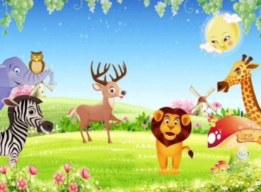
Biologists discovered protists namely:
prokaryotes—unicellular organisms, such as bacteria, that do not have membrane-bound organelles.
The eukaryotic protist is by far the most diverse group of organisms.
eukaryotes—unicellular and small multicellular organisms with organelles.
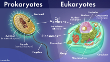
Kingdoms of Life
The most easily recognizable kingdoms are the Animals, Plants, and Fungi. These kingdoms include many large multicellular organisms.
The other kingdoms include mostly or entirely microscopic single-celled, or unicellular, organisms.
The eukaryotic protist is by far the most diverse group of organisms.
Callout
The Eubacteria, which are commonly called “bacteria,” and Archaea are prokaryotic and are often extremely difficult to distinguish due to their extremely small size and lack of internal structure.
Common Characteristics of the Six Kingdoms of Life
Kingdom : Eubacteria > 10 000 described Species
Cell characteristics:
Prokaryotic
Cell walls contain a unique compound.
Cells are variable in shape and size.
Other characteristics:
Diverse means of obtaining energy and nutrients
photosynthetic, chemotropic, or heterotrophic
All can reproduce asexually.
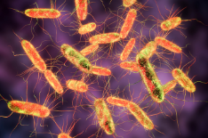
Example: Escherichia coli, Salmonella, nitrogen-fixing bacteria
Kingdom: Archaea > 400 described species
Cell characteristics:
Prokaryotic
Cell walls and cell membranes have a unique structure.
Most are extremely small.
Timeline
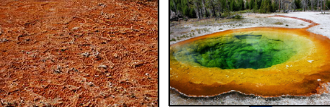
Other characteristics:
Some colonize extreme environments.
Live in the digestive tracts of mammals and marine environments
All can reproduce asexually.
Kingdom: Protista > 100 000 described species
Cell characteristics:
Eukaryotic
Cells have extreme diversity of cellular structure.
Some have chloroplasts and cell walls.
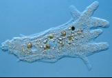
Other characteristics:
Maybe heterotrophic photosynthetic, or both
Have variable forms of movement
Usually live in aquatic or other moist environments
Reproduce sexually and asexually
Kingdom: Fungi > 100 000 described species
Cell characteristics:
Eukaryotic
The cell wall is composed of chitin.
Most are multicellular
Cells have no chloroplasts.
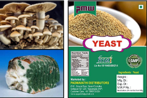
Examples: mushrooms, yeasts, moulds
Timeline
All are heterotrophic.
Most are terrestrial.
Reproduce sexually and asexually.
Kingdom: Plants > 250 000 described species
Cell characteristics:
Eukaryotic
All are multicellular.
Cell walls are composed of cellulose.
Possess chloroplasts.
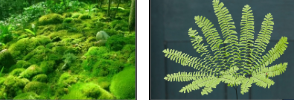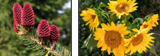
Autotrophic and photosynthetic
Most are terrestrial.
Reproduce sexually and asexually.
Kingdom: Animals > 1.2 million described species
Cell characteristics:
Eukaryotic
All are multicellular.
Cells have no cell walls or chloroplasts.
Examples: elephants, sponges, corals, insects, snails, birds, humans
Other characteristics:
All are heterotrophic
Most reproduce sexually.
Live in terrestrial and aquatic environments
Callout
A Simplified Phylogenetic Tree
A simplified phylogenetic tree shows key evolutionary relationships among the six kingdoms.
Note that the Protist Kingdom does not represent a single clade.
In 1996, Carl Woese conducted a detailed analysis of living organisms. He revealed that all organisms could be classified into three distinct groups. These groups, called domains, showed significant differences in their genetic makeup, which was very compelling evidence of their distinct evolutionary kinships (see image in next slide).
The brown, red, and green algae are more closely related to plants, while the amoeboid protists are more closely related to fungi and animals.
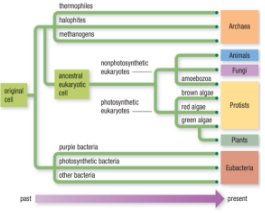
Domains of Life
In 1996, Carl Woese conducted a detailed analysis of living organisms.
He revealed that all organisms could be classified into three distinct groups.
These groups, called domains, showed significant differences in their genetic makeup, which was very compelling evidence of their distinct evolutionary kinships (see image in next slide).
Callout
The three domains of life based on the work of Carl Woese. This detailed arrangement of the branches is continually being refined as new data become available.
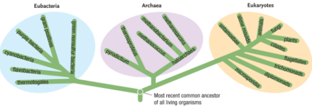
The Domain Eubacteria contains only the Kingdom Eubacteria. Similarly, the Domain Archaea contains only the kingdom Archaea.
The third domain, Eukaryotes, contains the other four kingdoms: Protista, Animals, Plants, and Fungi.
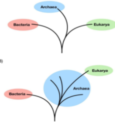